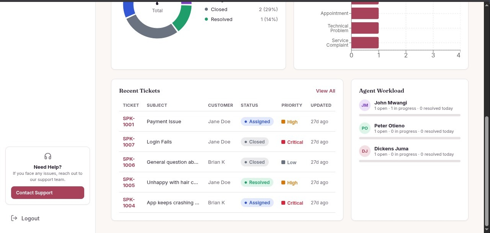
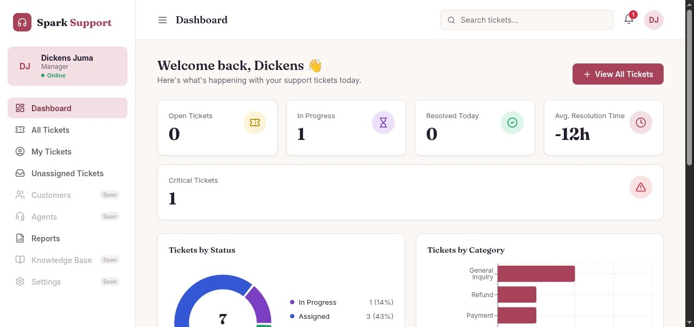
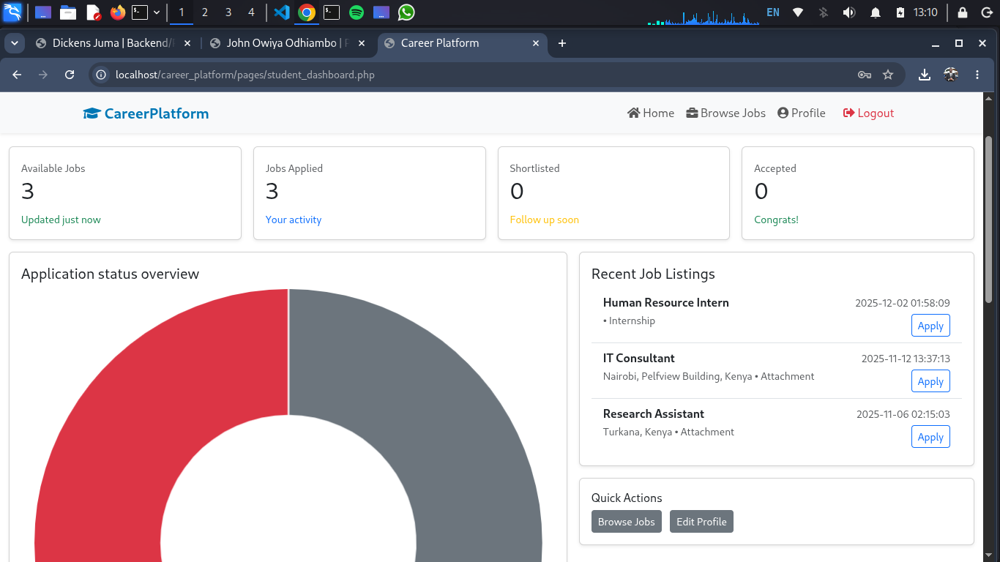
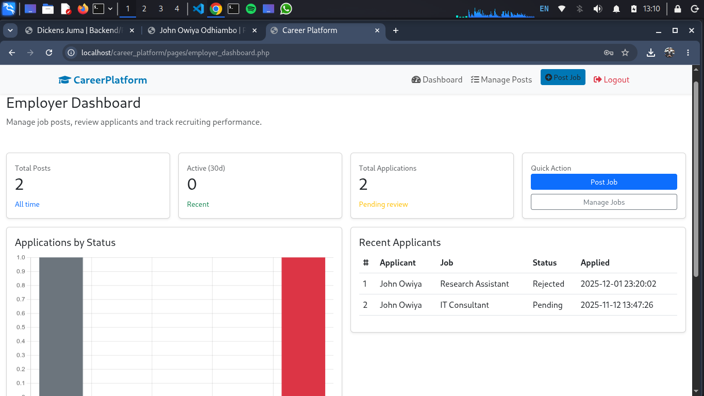
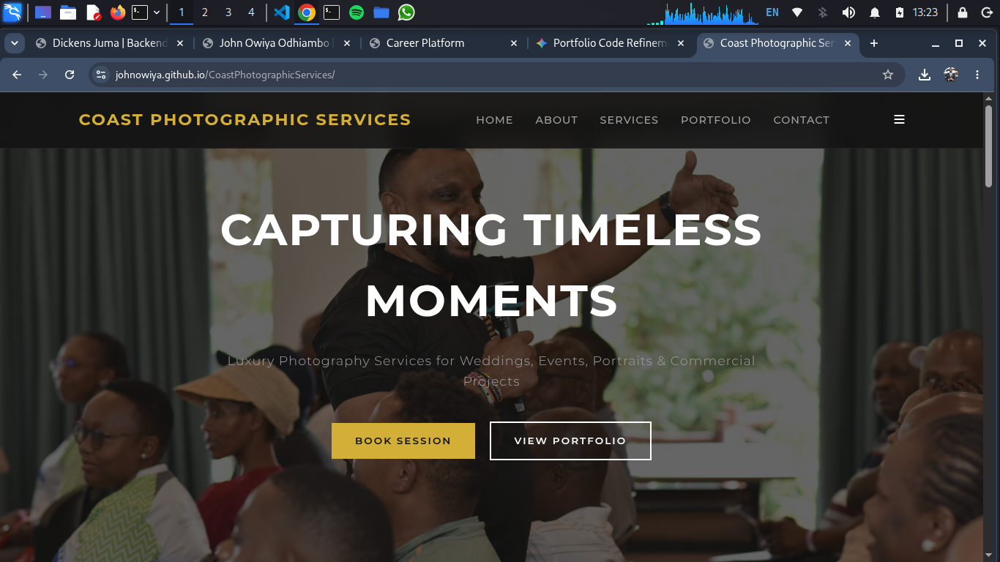
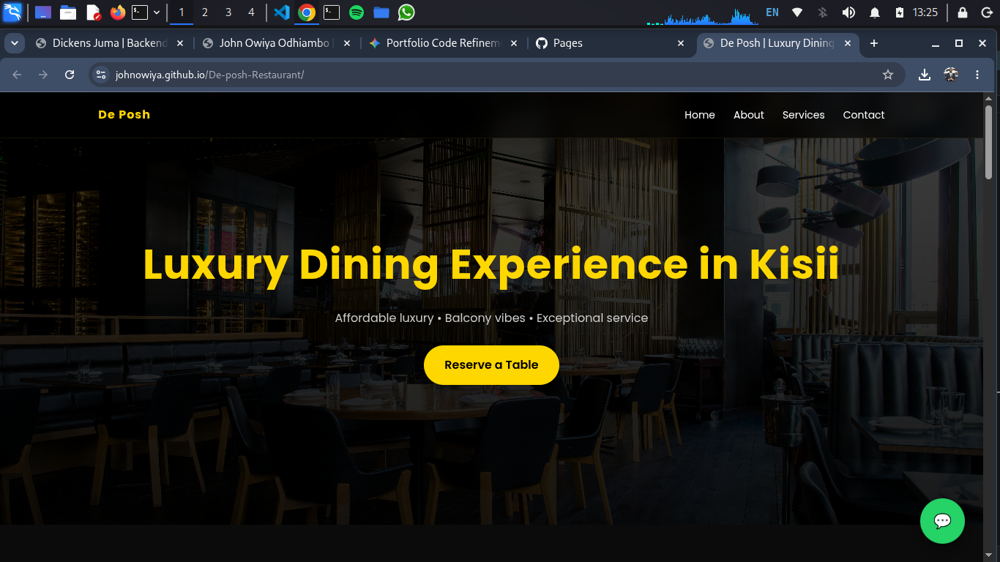

Full-stack developer working across React, Node.js/Express and MongoDB, with additional experience in Java and MySQL. Built and shipped a support-ticketing module for a live SaaS product during an industrial attachment at Ventridge.
I'm a final-year Applied Computer Science student at Kisii University and a full-stack developer working mainly in the MERN stack. During an industrial attachment at Ventridge I helped build Spark, a live salon-management SaaS platform, where I designed and shipped a support-ticket system end to end — React frontend, Express/Node API, MongoDB data layer, JWT authentication, the works. Before that I spent time on IT support and systems work at Liffton Analytica, which is where I picked up a lot of my grounding in databases, networks, and troubleshooting under pressure.
I also work with Java, MySQL, and JDBC on the side — the Student Results Management System below came out of that. I like owning a feature from the database schema through to a working UI, and I pick up new stacks quickly when a project calls for it.
Projects Built
Business Websites
Years Coding
Work Experiences


Full-stack support-ticketing module built for Spark, a live salon-management SaaS platform. Customers submit issues; staff triage, respond, and track them through to resolution.

Desktop academic management app with separate Admin, Lecturer, HoD and Student modules. Handles results, timetables and a complaints workflow, with role-based access control and JDBC-backed MySQL persistence.

Web platform connecting students with employment opportunities.

Responsive, media-heavy business website built for a photography and videography studio, with custom CSS media queries down to small mobile viewports.

Restaurant business platform managing client bookings, order tracking, and local delivery logistics.
Building full-stack features for Spark, a live salon-management SaaS platform, across the React frontend, Express/Node backend and MongoDB data layer. Designed and shipped a support-ticket system end to end, implemented JWT-based authentication, and built the REST API layer connecting frontend and backend.
Managed IT infrastructure and provided technical support across systems, networks and software. Handled troubleshooting for hardware, software and connectivity issues to keep downtime low, assisted with database management and system configuration, and applied cybersecurity best practices across day-to-day operations.
Open to full-stack and backend-leaning roles — get in touch if there's a fit.